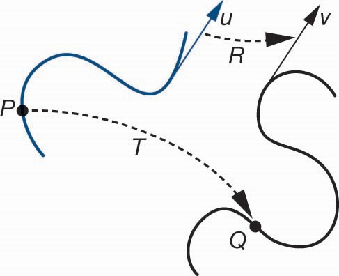
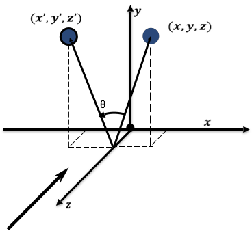

本部分内容：
我们已经知道，2D空间中有三种基本变换：
都能统一用矩阵和向量的计算表示，如何表示？
变换，指的是建立点与点或向量与向量之间的映射，如下图中所示，有映射关系$v=T(u)$，$Q=T(P)$
仿射变换，能够维持物体的线性属性，其中包含了物理上的重要的变换，如
在计算机图形学中，仿射变换是非常重要的，仿射变换能保持拓扑结构不变，即点、线、面之间的相对关系保持不变
考虑由上述四点构成的正四边形，若要实现按角速度$\theta$绕原点逆时针旋转的动画效果
即求点$P(x,y)$旋转$\theta$度后的新坐标$P'(x',y')$
核心工具是，三角函数
该矩阵即为在二维平面点$P$绕原点逆时针旋转$\theta$度的旋转矩阵
新坐标 x' 的推导:
$x' = r \cos(\alpha + \theta) = r\cos\alpha\cos\theta - r\sin\alpha\sin\theta$
$x' = x \cdot \cos\theta - y \cdot \sin\theta$
新坐标 y' 的推导:
$y' = r \sin(\alpha + \theta) = r\sin\alpha\cos\theta + r\cos\alpha\sin\theta$
$y' = x \cdot \sin\theta + y \cdot \cos\theta$
如何让一个点 $P(x, y)$，以原点为中心，在水平方向上放大 $S_x$ 倍，在垂直方向上放大 $S_y$ 倍，得到新的坐标 $P'(x', y')$？
缩放的逻辑非常直接：
该矩阵即为在二维平面点$P$以原点为中心按比例$S_x$和$S_y$缩放的缩放矩阵
新坐标推导:
$x' = S_x \cdot x$
$y' = S_y \cdot y$
如何将一个点$P(x,y)$平移一段固定的距离$(t_x,t_y)$，到达新的位置$P'(x',y')$?
从数学上看，平移是最简单的操作，就是坐标的加法：
\[ \begin{cases} x' = x + t_x \\ y' = y + t_y \end{cases} \]
问题来了：能像旋转和缩放一样，用一个$2\times 2$的矩阵来表示这个加法操作吗？
\[ \begin{bmatrix} x' \\ y' \end{bmatrix} = \begin{bmatrix} a & b \\ c & d \end{bmatrix} \begin{bmatrix} x \\ y \end{bmatrix} \]
如果能构建矩阵，则有
\[ \begin{cases} x'=ax+by\\ y'=cx+dy \end{cases} \]
会发现，无论如何选择$a,b,c,d$，都无法制造出一个独立的加法项$t_x$或$t_y$
核心原因：$2\times 2$矩阵只能表示相对原点不变的线性变换，包括旋转、缩放和错切等。而平移是一种
为了表示平移，需要扩展表示的维度，使用齐次坐标表示点，并使用齐次矩阵表示平移
$$ P(x,y)\Rightarrow P_h(x,y,{\color{red}1} )$$
目标是，找到一个$3\times 3$的矩阵，满足
\[ \begin{bmatrix} x' \\ y' \\ 1 \end{bmatrix} = \begin{bmatrix} ? & ? & ? \\ ? & ? & ? \\ ? & ? & ? \end{bmatrix} \begin{bmatrix} x \\ y \\ 1 \end{bmatrix} \]
计算后满足
\[ \begin{cases} x' = x + t_x \\ y' = y + t_y \\ 1 = 1 \end{cases} \]
根据矩阵乘法计算规则展开，可以得到
因此，齐次平移矩阵为
\[ M=\begin{bmatrix} 1 & 0 & {\color{red}t_x} \\ 0 & 1 & {\color{blue}t_y} \\ 0 & 0 & 1 \end{bmatrix} \]
\[ \begin{bmatrix} x' \\ y' \\ 1 \end{bmatrix} =\begin{bmatrix} x+x_t\\ y+y_t\\ 1 \end{bmatrix} = \begin{bmatrix} 1 & 0 & {\color{red}t_x} \\ 0 & 1 & {\color{blue}t_y} \\ 0 & 0 & 1 \end{bmatrix} \begin{bmatrix} x \\ y \\ 1 \end{bmatrix} \]
观察平移矩阵的结构，可以发现
到目前为止的三种基本变换矩阵分别对应：
缩放变换($2\times 2$)
\[ \begin{bmatrix} s_x & 0 \\ 0 & s_y \end{bmatrix} \]
旋转变换($2\times 2$)
\[\begin{bmatrix} \cos \theta & -\sin \theta\\ \sin \theta & \cos \theta \end{bmatrix}\]
平移变换($3\times 3$)
\[\begin{bmatrix} 1 & 0 & t_x \\ 0 & 1 & t_y \\ 0 & 0 & 1 \end{bmatrix}\]
是否可以将旋转和缩放也“升级”到$3\times 3$矩阵呢？
核心思想：使用齐次坐标和齐次矩阵的概念，将 $2\times 2$ 的线性变换矩阵嵌入到 $3\times 3$ 的矩阵中
将$2\times 2$的缩放矩阵变成$3\times 3$的齐次矩阵有：
\[ \begin{bmatrix} x'\\ y'\\ 1 \end{bmatrix} = \begin{bmatrix} s_x & 0 & ? \\ 0 & s_y & ? \\ ? & ? & ? \end{bmatrix} \begin{bmatrix} x\\ y\\ 1 \end{bmatrix} \]
将矩阵展开后求解，可得到：
\[ M=\begin{bmatrix} s_x & 0 & 0 \\ 0 & s_y & 0 \\ 0 & 0 & 1 \end{bmatrix} \]
将$2\times 2$的旋转矩阵变成$3\times 3$的齐次矩阵有：
\[ \begin{bmatrix} x'\\ y'\\ 1 \end{bmatrix} = \begin{bmatrix} \cos \theta & -\sin \theta & ? \\ \sin \theta & \cos \theta & ? \\ ? & ? & ? \end{bmatrix} \begin{bmatrix} x\\ y\\ 1 \end{bmatrix} \]
将矩阵展开后求解，可得到：
\[ M=\begin{bmatrix} \cos \theta & -\sin \theta & 0 \\ \sin \theta & \cos \theta & 0 \\ 0 & 0 & 1 \end{bmatrix} \]
现在我们有了三种基本变换的齐次矩阵表示：
缩放变换($3\times 3$)
\[ S_{(s_x, s_y)}=\begin{bmatrix} s_x & 0 & 0 \\ 0 & s_y & 0 \\ 0 & 0 & 1 \end{bmatrix} \]
旋转变换($3\times 3$)
\[ R_{(\theta)}=\begin{bmatrix} \cos \theta & -\sin \theta & 0 \\ \sin \theta & \cos \theta & 0 \\ 0 & 0 & 1 \end{bmatrix}\]
平移变换($3\times 3$)
\[ T_{(t_x, t_y)}=\begin{bmatrix} 1 & 0 & t_x \\ 0 & 1 & t_y \\ 0 & 0 & 1 \end{bmatrix}\]
三维空间中的变换与二维空间类似，只是多了z轴的变换。
平移
空间中，将一个点$P(x,y,z)$移动到新的点位置$P'(x',y',z')$，位移向量为$(t_x, t_y, t_z)$，即有
\[ \begin{cases} x' = x + t_x \\ y' = y + t_y \\ z' = z + t_z \end{cases} \]
平移对应的变换矩阵记为$T$，有$P'=TP$， 其中，$T$为
\[ T(t_x, t_y, t_z) = \begin{bmatrix} 1 & 0 & 0 & t_x \\ 0 & 1 & 0 & t_y \\ 0 & 0 & 1 & t_z \\ 0 & 0 & 0 & 1 \end{bmatrix} \]
缩放
三维空间中，沿着三条轴的方向改变对象的大小，假设在三条轴方向上缩放系数分别为$s_x, s_y, s_z$，其表达式可写成
\[ \begin{cases} x' = s_x \cdot x \\ y' = s_y \cdot y \\ z' = s_z \cdot z \end{cases} \]
缩放对应的变换矩阵记为$S$，有$P'=SP$， 其中，$S$为
\[ S(s_x, s_y, s_z) = \begin{bmatrix} s_x & 0 & 0 & 0 \\ 0 & s_y & 0 & 0 \\ 0 & 0 & s_z & 0 \\ 0 & 0 & 0 & 1 \end{bmatrix} \]
反射可视作是特殊的缩放
\[ \begin{cases} s_x=1, s_y=1\\ s_x=-1, s_y=1\\ s_x=-1, s_y=-1\\ s_x=1, s_y=-1 \end{cases} \]
旋转
三维空间中，旋转定义为绕特定坐标轴的转动
绕$Z$轴旋转$\theta$角，保持点坐标的$Z$分量不变
点$(x,y,z)$绕$Z$轴逆时针(正向)旋转$\theta$角度，相当于是点在$XOY$平面绕原点旋转在三维空间的扩展，有
\[ \begin{cases} x' = x \cdot \cos \theta - y \cdot \sin \theta \\ y' = x \cdot \sin \theta + y \cdot \cos \theta \\ z' = z \end{cases} \]
对应的齐次旋转变换矩阵记为$R_{Z}(\theta)$，有$P'=R_{Z}(\theta)P$， 其中，$R_{Z}(\theta)$为
\[ R_{Z}(\theta) = \begin{bmatrix} \cos \theta & -\sin \theta & 0 & 0 \\ \sin \theta & \cos \theta & 0 & 0 \\ 0 & 0 & 1 & 0 \\ 0 & 0 & 0 & 1 \end{bmatrix} \]
相应的，绕$X$轴和$Y$轴正向分别旋转$\theta$角度，保持相应的分量值不变
利用与$Z$轴相同的方式，可推导得到绕$X$轴和$Y$轴旋转的齐次坐标矩阵表示分别为：
\[ R_X(\theta)=\begin{bmatrix} 1&0&0&0\\ 0&\cos{\theta}&-\sin{\theta}&0\\ 0&\sin{\theta}&\cos{\theta}&0\\ 0&0&0&1 \end{bmatrix} \]
\[ R_Y(\theta)=\begin{bmatrix} \cos{\theta}&0&\sin{\theta}&0\\ 0&1&0&0\\ -\sin{\theta}&0&\cos{\theta}&0\\ 0&0&0&1 \end{bmatrix} \]
思考，如何实现绕任意点的旋转？